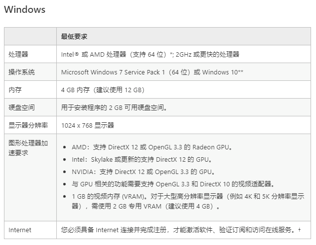

Lightroom 2020 SP
< 返回
链接：https://pan.baidu.com/s/14gfeYKYkMTTkqAhttta6Wg
提取码：1uxa
校验值（SHA-1）：a41c8171c86558d32e70ba772ef345248cb1a6ae
使用须知
（Lightroom 2020 SP 与 2021 SP 的校验值完全一样，可能是作者 @vposy 打包的原因，这里先把 2021 版放在这里，若有不便请见谅）
觉得百度网盘下载慢又没有 SVIP 的同学，这里安利一款超好用的度盘解析网站：极下解析
（链接 jixia.baidui.vip, jx.jixia.ink, jx.jixia.pro, jixia.fit, jixie.jixia.ink, 海外 jx.jixia.hk, jiexi.jixia.hk）
基本免费，使用教程点网站左边的使用帮助。
解压密码：@vposy，该软件为微博 @vposy 破解。
解压后运行里面的 Set-up.exe 即可。仅供学习，禁止商用。
系统要求
（这里的系统要求是 2020 SP 版的，2021 版系统要求请参阅 2021 版下载界面。）
